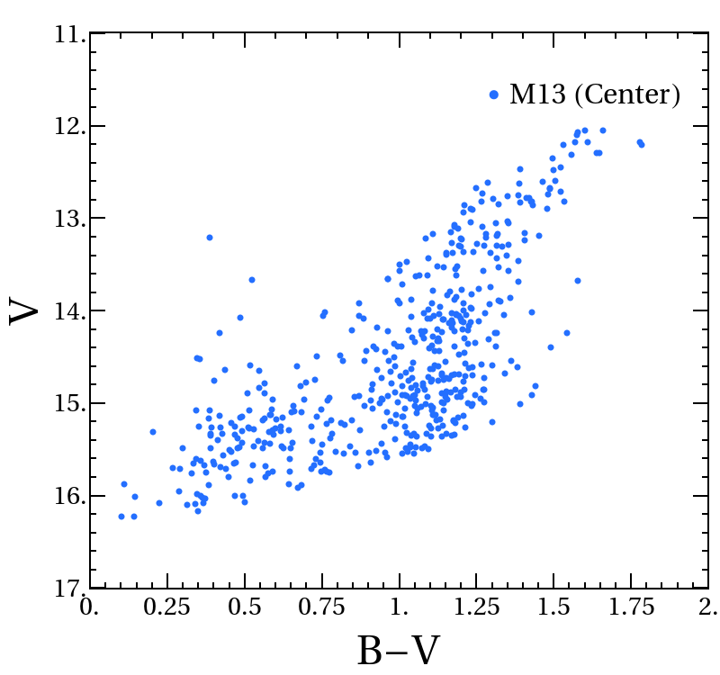
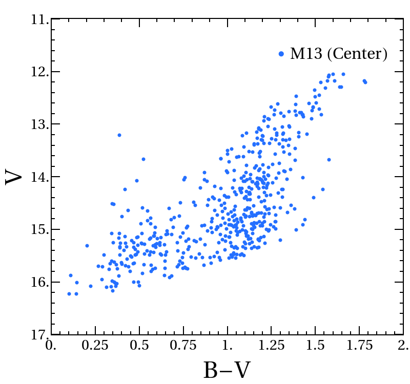

Comprehensive Study of Globular Cluster M13.
We generate the star density profile of the global cluster Messier 13 (NGC 6205 or the Great Globular Cluster in Hercules), and obtain its Hertzsprung-Russel (HR) diagram with a crowded-field imaging techniques using IRAF Software. The observation is done using long exposure CCD imaging telescope at Gale Observatory. The data is processed with programming in PV-Wave . Below are the CCD image and the extracted HR diagram.
 

From Reflectivity Spectrum to Composite Lightcurve of the Asteroid.
We study the classifications of asteroids based on their shapes and intensity of their reflectivity spectra. We compare the reflectivity spectra of various groups of asteroids and meteorites to see the connection in their evolution. We conclude that asteroids and meteorites of similar composition are likely tohave similar reflectivity spectra. We also estimate the rotational period of asteroid 125 Liberatrix from its light curve, which turn out to be very accurate for small celestial objects.